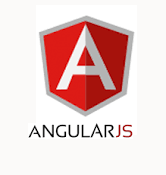
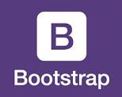
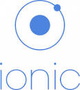
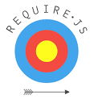
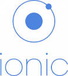
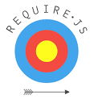

Shelley Davis-Wise, Software Developer
Brought to Nashville by the professional audio industry, I moved here from Nebraska in 1996. Since then, I've come to love Nashville as a hometown and am settled here for the foreseeable future. I am married and the proud mother of a bright, witty and kind son.
A passionate Maker of Things, when I'm not coding, I can usually be found making pottery in my home studio, crocheting, or cooking. Being both creative and pragmatic, I believe that excellence lies at the intersection of beauty and utility.
I hope to make my contribution doing front-end web development and I have great interest in increasing my knowledge of AngularJS, CSS, compilers (e.g. Sass, Gulp), and SQL. I want to learn more about UI and how to create a positive experience for the site- or app-user. I look forward to finding a good fit on a development team where my talents can be of maximum benefit.
Technologies I Have Worked With:



  
 